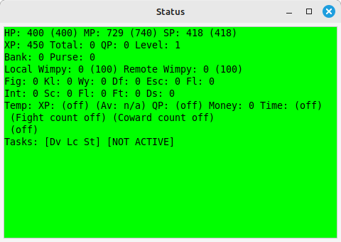
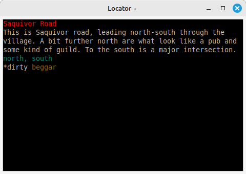
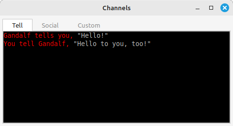

Tasks are scripts written in Perl.
Tasks are designed so that all the boring stuff - scheduling, handling of interfaces, maintaining task windows - is handled automatically, leaving you free to design ever more efficient ways of slaughtering your enemies.
Axmud provides twenty or so built-in tasks, some of which are more useful than others. This is a brief summary of what they do.
Advance task
Automatically advances your character’s skills. This task might be useful at a few worlds, but will be completely useless at many others.
Attack task
Monitors attacks and, like the Status task, updates the data stored in the current character profile. (The task doesn’t initiate attacks - that's your job.)
Channels and Divert tasks
Diverts text from the main window to the task’s own window. The Channels task uses multiple tabs, one for each channel. The Divert task uses a single tab, and indicates the channel by changing the background colour
Chat task
An instant messenger service. Contains an almost complete implementation of the MudMaster and zChat protocols (only encryption has not yet been implemented).
Compass task
Hijacks your keyboard's keypad, allowing you to move around the world with a single keypress. This is a convenient way to set up macros and to enable/disable them at will.
Condition task
Works alongside the Inventory task. Tries to keep track of the condition of items in the your character’s inventory (e.g. is your armour in perfect condition, or is it falling to pieces?)
Connections task
Shows a list of sessions. A session handles a single connection to a world (even in 'connect offline' mode.)
When the task is running, you can use CTRL+1, CTRL+2 and so on to switch between sessions. (CTRL+TAB can be used regardless of whether the task is running or not.)
Countdown task
Displays a window with a clock. You can use it to count down from some time until the clock reaches zero, or count up from zero until the clock reaches a specified time. If sound is turned on, you'll be warned when the clock is near its target, and again when the clock reaches its target.
Frame task
Used by the MXP and Pueblo protocols to create new windows for various purposes.
Inventory task
Keeps track of your character’s inventory, displaying a summary in the task's own window.
Launch task
Displays a list of Axbasic scripts in a task window. You can add, edit and delete scripts, as well as running them, by clicking on the window's buttons.
Locator task
Interprets room statements (descriptions) received from the world. The interpreted data is then available to other parts of the Axmud code, such as the automapper. The task window is optional. If open, it shows a summary of the current location.
MapCheck task
Another debugging task. Shows a summary of the automapper window's drawing activities (if it's open).
Notepad task
A notepad that allows you to keep notes that are preserved for future sessions. There's a separate notepad for every current profile (one for the current world, one for the current character, and so on). The notes are available to view whenever the profile is current.
RawText task
Another debugging task. Displays all text received from the world, including all escape sequences and special characters.
RawToken task
Yet another debugging task. Displays all text received from the world split into tokens. Newline characters count as a single token, as do escape sequences. Uninterrupted sequences of normal characters are interpreted as a single token.
Script task
Works alongside scripts written in Axmud’s own scripting language, Axbasic (see Section 10)
Status task
Keeps track of your character’s XP, health points and so on. The intercepted data is then available to other parts of the Axmud code, such as the your own scripts and the gauges visible near the bottom of the main window. Data stored in the current character profile is automatically updated. The task window is optional. If open, it shows a summary of the intercepted data.
System task
Diverts (or copies) system messages (ordinary system text messages, as well as error, warning, debug and improper arguments messages) into a separate task window.
TaskList task
A debugging task that displays a list of all tasks running at the moment. The list is updated several times a second.
Watch task
Re-displays any text displayed in all Channels, Chat and Divert task windows, across every session. Useful for when you are connected to several worlds simultaneously.
Some Axmud tasks try to interpret text from the world, in some cases storing the interpreted data in a profile.
Axmud does not have some kind of magical ability to recognise text from any world and in any language. Instead, it must be taught how to recognise certain patterns. (If you are using one of the pre-configured worlds, most of this work will already have been done.)
Those patterns are typically stored in a profile, usually the world profile.
Some tasks are particularly dependent on the patterns you've collected. The Locator task won't work at all unless Axmud has been taught how to interpret a room statement (description). The Status task won't work very well unless Axmud has been taught how to interpret text like You have 1000 gold coins. The Channels, Divert, Inventory, Condition, Advance and Attack tasks are also reliant on data stored in profiles. Some tasks, however, don't refer to data stored in any profile.
Tasks that depend on one or more profiles automatically reset themselves if you set a current profile (for example, if you change the current character from Gandalf to Bilbo using a ;setchar command).
There are several client commands which can be used with all tasks. In addition, many tasks have a set of client commands devoted to them.
You can find out more about each kind of task, and the client commands they use, with the ;taskhelp command:
;taskhelp status
;th status
Commands like ; are quite flexible about how the task is specified. All of the following commands will work:
;taskhelp loc
;taskhelp locator
;taskhelp locator_task
;taskhelp locator_task_3
This is how to start and stop a task:
;starttask locator
;st loc
;halttask locator
;ht loc
Most of the built-in tasks are jealous, meaning that you can't run two copies of them at the same time.
You can also pause and resume tasks:
;pausetask locator
;pt loc
;resumetask locator
;rt loc
In an emergency, you can use the ;freezetask command, which freezes all currently-running tasks. Use the same command again to unfreeze them.
You might also find the ;listtask command useful. It displays a list of all the tasks that are currently running. (This list is called the current tasklist.)
;listtask
;lt
All of these actions are also available in the data viewer window (see Section 4.6).

The Status task keeps track of your character’s XP, health points and so on. The intercepted data is then available to other parts of the Axmud code, such as the your own scripts and the gauges visible near the bottom of the main window. Data stored in the current character profile is automatically updated. The task window is optional. If open, it shows a summary of the intercepted data.
The window's layout can be customised. The picture above shows the layout used with the Dead Souls pre-configured worlds; other pre-configured worlds will use a different layout.
The task collects data passively: in other words, if you type the score command, the world will send back some text, the Status task will (hopefully) recognise that text, and the XP displayed in the task window will be updated. If you don’t type score for twenty minutes, the value will be twenty minutes out of date.
If this is inconvenient, you can ask the task to send commands like score at regular intervals:
;addstatuscommand score 60
;asc score 60
This will send the score command every 60 seconds. You can use any command and any time interval. If the command contains spaces, you should enclose it within diamond brackets:
;addstatuscommand <look at watch> 60
;asc <look at watch> 60
;activatestatustask
;ast
The task won't send these commands right away; you must first put the task into active mode:
;activatestatustask
;ast
To stop sending the commands, you can put the task into disactivated mode:
;disactivatestatustask
;dst
However, this is only half the story. Several MUD protocols send data that's normally invisible to users, and this data typically includes information like the character's current XP.
If you're connected to a world which sends this data, you'll notice the task window and/or main window gauges update themselves without any intervention from you.
The task window's background colour changes according to your character's current health. Green means the character is relatively healthy, red means the character is at death's door, and black means the character is actually dead.
The colour can also change when the character dies, gets resurrected, falls asleep, wakes up, loses consciousness or comes around (but only if these events are implemented by the game).
The Attack task - if it is also running - monitors any fights involving your character. Typically it looks out for patterns like You kill (.*) and (.*) runs away!
It is also capable of monitoring other kinds of interaction - muggings for thief characters, healings for cleric characters, and so on.
The task gathers information and passes it on to the Status task, so that the combined data can be displayed in one window. You'll notice that the Status task's fight counter (Fig), Kill counter (Kl) and so on are only updated when both the Status and Attack tasks are running.
Sometimes you'll want to track the number of kills, or how much XP has been gained, in a certain zone of the world. The temporary counters (on the line that starts Temp) can do this.
To start the temporary counters, or to reset them back to zero, use this command:
;resetcounter
;rsc
Once again, it must be stressed that Axmud cannot magically interpret text from all worlds. It must be taught how to recognise patterns. If you're using a pre-configured world, some of those patterns have already been added.
Most of the patterns used by the Status and Attack tasks are stored in the current world profile. (See Section 6 for a brief tutorial about how to write your own patterns.)
If you make any changes to these patterns, they won't be applied until you reset the Status and/or Attack tasks, for example:
;resettask status
;rtt stat
By the way, some of the values collected by the Status task are stored in the current character profile.
The Locator task interprets room statements (descriptions) received from the world.
The information that can be collected varies from world to world, but it typically includes the room's title, verbose description, exit list and one or more lines describing the room's contents.
Once collected, the interpreted data is available to other parts of the Axmud code, notably the automapper. The automapper relies on the Locator task; if the task is not running, the automapper cannot function.
In fact, the Locator task is so important that Axmud provides a Locator wizard. The wizard teaches Axmud how to recognise room statements (with just a little help from you). See Section 15.1.
The Locator task can run with a task window or without one. When the window is open, it displays a summary of the interpreted data.
Here we can see a typical location in Dead Souls.

In Axmud terminology, a room statement is the complete description of the room received from the world, including the list of exits and the room's contents list. The Locator task tries to capture as much of this information as possible.
The different parts of a room statement are called components. The red line at the top is the room's title. (Some worlds use a brief description, and this typically appears in red, instead.)
Below that is the verbose description component. The whole description has been captured, but the task shortens it to fit the window.
The room contains six objects. Tim and Wim are non-player characters (NPCs), so there is an asterisk ( * ) next to their names. If one of your scripts has marked them as killed, this will change to a hyphen ( - ).
There are three identical wooden benches. You'll notice that the most important word - the noun - appears in a different colour. You'll also notice that the task saves space by listing multiple inanimate objects on the same line.
The Locator task keeps track of the world commands you send and tries to work out how many room statements to expect. If you send the following sequence of commands:
n;n;n;n;n;n;n;n;n;n;n;n;n;n;n;n;n;n;n;n
...the task will be expecting twenty room statements. These statements will be counted off as they are received; you'll see a number in the window's title bar which will (hopefully) decrease until the task is expecting no more rooms.
Occasionally the task will lose track. If you notice that the character has arrived at their destination but the task is still expecting five more rooms, then the task needs to be reset.
;resetlocatortask
;rlc
 This main window button is a more convenient way of resetting the Locator task. You can also use the menu: click on Tasks > Locator Task > Reset task.
This main window button is a more convenient way of resetting the Locator task. You can also use the menu: click on Tasks > Locator Task > Reset task.
How does the Locator task know that Tim is a living, breathing NPC, but that the wooden bench is not?
In a different context, Axmud could simply consult a standard English dictionary (or one in French, and so on). Unfortunately, most MUDs invent their own names for NPCs, and most player characters (PCs) at these worlds also have names that won't be found in any standard dictionary.
Axmud uses its own dictionaries. Besides many other things, these dictionaries store lists of vocabulary.
Since most worlds have their own unique names for everything, Axmud allocates each world profile its own dictionary that has the same name as the world. (This is not a fixed rule; worlds can share dictionaries, if required.)
There are several ways to add new words to an Axmud dictionary. For example, to add Slartibartfast to the dictionary as an NPC, you can use the dictionary's edit window.
The Channels and Divert tasks intercept text that would normally be displayed in the main window, and redirect that text into the task's own windows.
To use either task, you must tell Axmud what text you want to intercept.
If you're using a pre-configured world, Axmud already knows how to intercept some common messages. Axmud also knows how to separate those messages into channels - one channel for chat messages, another channel for tell messages, and so on.
Patterns can be added using a client command (see the help for ;addchannelpattern) but in general it's easier to add patterns in the world's edit window.
Suppose we want to intercept all shout messages like this:
Bilbo shouts, 'I'm the greatest!'
...and to redirect the text into a channel called boasting. This is how to do it.
You might want to see messages like Gandalf tells you... and Bilbo tells you..., but not The shopkeeper tells you...
For this, you can specify ignore patterns. When some text is received from the world, if it matches a channel pattern AND an ignore pattern, it isn't redirected to the task window.

The Channels task is fairly self-explanatory. When it first starts, tabs for three channels are created. If you've specified any more channels, extra tabs are added as soon as they are needed.
You can modify some aspects of the task's behaviour.
That will modify the current task; in Section 12, we'll discuss how to make those changes permanent.

The Divert task is the (much) older brother of the Channels task.
Divert task windows doesn't have multiple tabs; instead, when some text is intercepted, the background colour changes temporarily. In this case, it has turned yellow signifying that the text is in the tell channel.
Traditionally, the Divert task used just four channels - one for social messages, one for tell messages, a warning channel and a custom channel for everything else.
The task can now use any channel. The four channels above each have their own colour; any other channel you might create is displayed using a fifth colour (magenta by default).
For your convenience, the window provides a command entry box. Any type of instruction, including client commands and speedwalk commands, can be typed in this box. This is useful if you're connected to a world, but busy doing something else; as long as the Divert window is visible on your desktop, you can reply to your friends when they talk to you.
If you're connected to several worlds at the same time, you might also find the Watch task useful. Everything displayed in Channels, Chat and Divert task windows, in any session, is copied into any Watch task window that's open.
The Chat task is an instant messenger service. It is an almost complete implementation of the MudMaster and zChat protocols (only encryption has not yet been implemented).
Several popular MUD clients implement these protocols, so your friends don't need to be using Axmud; they only need to be using a compatible MUD client.
There are some issues of security to consider, so we recommend you read the whole of this Section before using the task.
You can get started by listening out for incoming calls.
;chatlisten
;listen
When you receive an incoming call, you can either accept or decline it.
For outgoing calls you'll need to know your friend's IP address and the port they're using for chat sessions.
Calls can be made with either protocol. The zChat protocol is slightly more powerful, so let's use that.
;chatzcall 159.200.36.251 4050
;zcall 159.200.36.251 4050
Most MUD clients use the port 4050, so it's normally safe to omit it.
;chatzcall 159.200.36.251
;zcall 159.200.36.251
You can also call someone using the main window menu.
Once a connection is established, a task window will appear.
There are about thirty client commands used with the Chat task, all of which are typed in the main window. For a list of them, type:
;taskhelp chat
;th chat
There is a separate list of commands used in the task's own window. All of these commands begin with the usual semicolon ( ; ) character. To see this list, type ;help in the task window.
To chat with someone, just type into the window.
You can also send emotes. In the main window, you would type:
;emote grins
In the task window, any command that starts with a colon ( : ) is also treated as an emote:
:grins
In either case, if Bob grinned at you, you would see something like this:
To hang up, just close the window. Alternatively, use the following command in the main window, which will hang up on everyone:
;chathangup
;chu
It would be rather inconvenient to type an IP address like 159.200.36.251 every time you wanted to chat with a friend. Luckily, Axmud allows you to save your chat contacts so they're available at a click of a button.
On Page 3 of the same edit window you can choose the name, email address and icon which are sent to your friends, whenever you open a chat session with them.
If you aren't able to establish a chat session with someone, it's probably because a firewall (yours or your friend's) is blocking the connection.
Configuring a firewall is beyond the scope of this guide, but you can probably find the help that you need somewhere on the internet. Unblocking port 4050 will often solve the problem.
The MudMaster and zChat protocols are by now rather ancient, so there are some risks associated with using Axmud's Chat task.
Firstly, you should note that Axmud's authors are not experts in computer security. Using the Chat task should be safe, but there are no guarantees that a determined miscreant won't be able to find a way to abuse it.
The Chat task is able to send and receive files (see the help for ;chatsendfile), view what is happening in your friend's connections (see the help for ;chatsnoop) and even to control those sessions remotely.
None of those features are enabled by default; you must give explicit permission before receiving a file or allowing someone to snoop on your connection. Nevertheless, you should exercise caution before allowing someone you've never met to gain a foothold on your computer.
The Compass task hijacks your keyboard's keypad, allowing you to move around the world with a single keypress.
Other keypad keys are also hijacked, for example:
You can change the command sent when some keypad keys are pressed.
In addition to using keypad keys, you can click the task window's buttons. These buttons work even when Disable is selected.